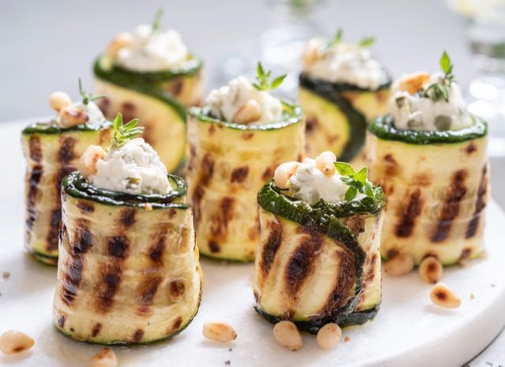

Receita
Enrolado de Abobrinha

- Ingredientes:
abobrinha verde (lâmina)
1 cenoura (bastonetes)
30 g de vagem francesa (paysane)
30 g de cebola (julienne)
50 g de cascas da melancia (paysane)
100 g de polpa melancia
50 g de cenoura cozida (aparas)
Alecrim fresco a gosto
Molho de pimenta a gosto
Ervas frescas (orégano, salsa, manjericão) a gosto
Sal a gosto
Modo de preparo:
Branquear as lâminas de abobrinha.
a cenoura, a casca da melancia, a cebola, temperar com sal e ervas frescas.
Cozinhar as aparas da cenoura e fazer um purê, cortar a melancia em pedaços e levar para cozinhar, ajustando o sal e o molho de pimenta.
Servir a abobrinha sobre a cama de molho.